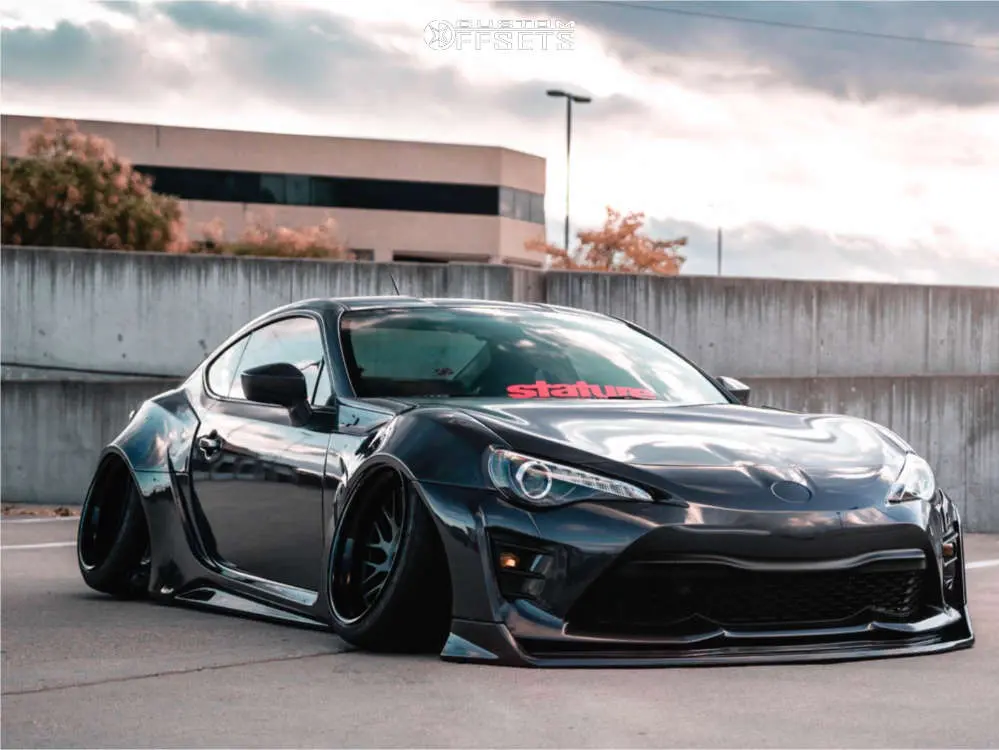

Toyota Supra (WebP)

Description
This image shows the agressive body lines of the Scion FR-S and is a beautiful JDM car.
File Type Information
WebP is an image format made by google that provides good compression for web graphics with smaller sizes than usual formats.
Why This Image
I chose this image because I own a Scion FR-S and my passion of cars is built in to this project, I love JDM cars and being in the car scene has made me learn so much.
Source
Source: Custom Wheel Offset